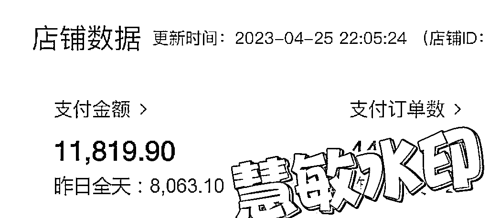
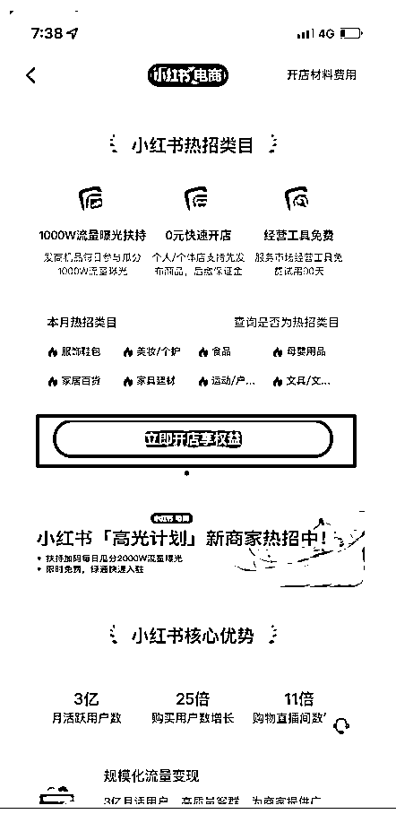

来源：https://nn5wp654xf.feishu.cn/docx/VLU8dFZiRoGHTKx8Bymc0LdLnsh
大家好，我是慧敏，每次看到大家写的文章，总感觉可以赚到钱，但是执行的时候，不是这个问题就是那个问题，一直没有找到合适的项目，只能看着各位大佬赚钱，心里一直想我到底差在哪里了。
做视频号直播+短视频，没想到第一天直播三四个小时就卖了1万多，差不多3天就赚了我一个月的工资，20天就赚钱了我一年的薪资，因为是应季品，所以后来没有能继续直播，也想多去尝试学习新的平台。在此一直都是我和我老公在做，也就是夫妻档拉，因为刚做，对于招员工没有底，也怕带不好团队，一直单打独斗。
前年12月的时候，朋友跟我说小红书可以短视频带货，因为女生都爱刷小红书，卖的是酒精消毒喷雾，当时我说没有一个人写这个小红书电商的文章，我就一直留意这个事情。
去年3月初开始做，一周起来2个店铺，很快就拿到结果，做了百货，玩具，图书，女装，都做起来了，有笔记百万以上的，产品销售过万的，并且有长尾流量，一直到现在还在出单，相比较直播，笔记可以兼职去做，直播来钱会直观些，发笔记，多数账号，一个月能爆两次大流量就不错了，我们的账号也有一直能多次爆的，并且没有养号一说，2个店铺，2周赚了十几万，真的很香。

小红书无人直播今年年后开始做的，我因为以前踩过坑，所以从来不对外说具体项目，去年越影大哥跟我说过，有些人只是缺一个机会，今天直接上干货，纯分享小红书无人直播的全套SOP大纲，这个账号是带了一个月的新人做的账号，20天左右的数据。
一、搭建小红书矩阵号
1.个人：移动、联通、电信去办卡，再用亲戚朋友的实名去办卡，注册账号
2.小红书实名解决办法
个人店铺：一个身份证实名可以开一个个人店铺，注意，目前可以，实名用别人的，绑定自己的银行卡。（会有被别人解绑的风险）
企业店铺：一个营业执照可以开两个企业店铺，一个企业店铺可以绑定3个主理人账号。
3.个人开店流程
点击右下角我,左上角三个杠，创作中心，更多服务，开通店铺，立即开店，提交资料去开店，个人店铺就是自己实名的店铺，个体工商户就是需要营业执照，可以下面挂3个子账号。

4.设备购买建议
iphoneX,差不多800左右，以前也买过安卓机但是一年不到开机都开不了，长久打算还是iphoneX合适一些，不用还可以再卖掉。
二、小红书主要变现方式
1.短视频/图文笔记带货
这是最常见的变现方式，店铺商品，发笔记去带货，
2.导粉引流私域变现
很多行业都会去做引流
3.各大IP接广告变现
这是小红书达人常见的方式，比如美妆、穿搭、母婴、好物分享、各种测评。
4.直播变现
点击首页，最上面选择直播，可以看到目前直播的账号。
可以看到有买手榜单，主理人榜单，品牌榜单，店铺榜单，注意，这里我们要关注主理人榜单和店铺榜单，这里多数情况下是同行的无人直播间，主理人的意思是，一个营业执照，下绑定的3个主理人账号；店铺榜单的意思是个人开的店铺。
三、新手注意事项
1.账号基础搭建
账号名称，头像，简介介绍，简单包装一下，这个其实不是特别重要，不需要花太多心思，有些没有改名字的人家素材好也是一样可以跑出来的。
2.选品找素材
以品推品：可以先多去刷同行的直播间，找最近开播，销量高的产品，需要每天多刷，一看就能打得过的直播间，以品去推品，找类似的直播，有些抖音账号自己也会做矩阵直播间。
素材不要局限于抖音，可以看看快手，视频号，多渠道去找。
3.找对标
就是找能打得过，或者说跟得上的直播间。
小红书上就是刷店播榜单和主理人榜单，去关注。
抖音上的素材，就是看这个账号一周新起来的号，销量不错，自己直播，不是大V达人直播的，对产品细节讲解详细，这种新的素材同行还没有在小红书上跑过，可以立马跟一下。
4.发笔记引流直播间
直播的时候，可以多发一下笔记，当然我们也有不发笔记就能直播起来的账号，笔记只是用来作为增值，可以通过笔记曝光引流直播间，作为流量增值
5.直播间封面
这个非常关键，笔记封面可以提高直播间点击率，可以马扁，吸引点击。封面的选择可以参考同行，也可以学习这个产品的爆文笔记的封面，用来作为自己直播间的封面。
6.素材产品转化能力强
需要找合适的直播素材，比如在其他平台播得不错的，在线人数低，主播的情绪可能就低落，在线人数高，主播情绪就饱满一些，还有直播间场景的搭建，都是参考因素。
7.账号矩阵准备
新手至少准备一个店铺3个账号去测试，或者3个个人店铺，类目推荐女装、食品、百货、女鞋，新号开播是有新手流量扶持的。
四、小红书选品方法
1.人群分析
2.类目分析
3.选品建议
用户年龄：26到40之间，一线和新一线城市多，主推30岁左右女性用品。
类目：高佣金，利润50%以上，具体看品，无人直播不考虑复购
4.选品工具
抖音类选品
抖店：https://fxg.jinritemai.com/
蝉妈妈：https://www.chanmama.com/
考古加：https://www.kaogujia.com/
巨量算数：https://trendinsight.oceanengine.com/arithmetic-index
巨量百应：https://www.douyinec.com/
小红书类选品
千瓜数据：https://app.qian-gua.com/#/data/category
蝉小红：https://www.chanxiaohong.com/login
有米有数：https://console.youshu.youcloud.com/recommend/goods/10601
灰豚数据：https://xhs.huitun.com/#/home
这些数据仅供参考，因为别人也会看数据，一群人跟同样素材，死号快，我基本都是自己去刷直播间，是最快的，很少去看数据平台了。
五、直播素材处理方法
1.有多个软件可以去录制下载别人的直播间素材，这里就不放了。
2.用OBS直播推流软件，通过小红书直播助手电脑端直播。
3.素材视频去重
剪辑（去掉价格，平台极限词，比如“最”，有的主播吐词不清楚，官方会误判）
去水印
镜像
变速
这几个用的比较多。
六、直播来源分析
直播间上下滑动，发现频道，视频内流直播卡，直播广场，搜索。
七、重点注意事项
1.不要跑和别人同样的素材，如果是一样的素材，两个号都会违规，所以别人在跑的，或者多人在跑的素材，不要上，会违规，可以以品推品。（有时候会跟同行抢素材）
2.开播时长至少3个小时以上，前期测品，至少测试3场，拉时长，如果没有成交，场观低，立马换品，不要死在一个品上
3.既然玩的是短期块钱，对于账号就不要太在意，会废号。
4.会出违规通知，严重的是永久封禁，还有15天处罚，或者提示录播，提示录播没有关系，继续上，看流量是否正常，只要不是15天处罚就没关系。
5.素材里违禁词剪辑干净，评论区有差评，录播、盗播的提前设置好，在线人数多的时候，做好直播间互动，店铺客服做好承接。
6.违规的最终原因多半是素材不行。
7.说一说我为什么会做这个短期项目，因为带团队做，招员工这些项目不合适，管理上我也觉得烦，没有资金壁垒，没有什么门槛，招了员工感觉也会跑掉，短期内能够赚钱就行。这一部分数据都是晚上熬夜，熬到凌晨三四点，早上6点又起床，承接流量，以前觉得我们的执行力可以跟上，为什么就是拿不到什么结果，可想而知，比你努力，比你拼命，比你执行力强的人多的是。曾经做视频号的时候四点半早起，夫妻档，在田边直播，户外体感温度40多度下直播，从小白，到开播3000多人在线，看到成交数据的那一刻觉得值了。
发笔记去带货，也是，一直发一直发，优化笔记再发，在电商的路上，我踩过很多坑，起码还是拿到结果了，目前也在测试新的项目，感谢贵圈让我拓宽了眼界，弥补了信息差，认识了各位优秀大佬！